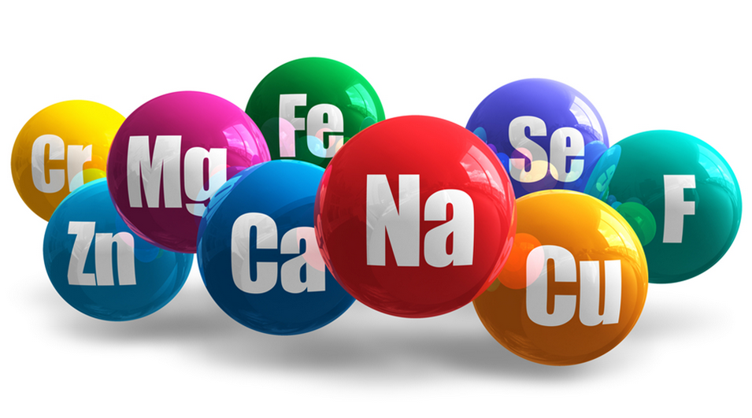

Know what is essential for your furry friend
-
Vitamins are essential for your cat's good vision, bone growth, and efficient metabolism.
-

Minerals are required for your cat's strong teeth and bones.
-
Fats and essential fatty acids are a major source of energy in the diet and they add significantly to a food's palatability.
-
Protein is essential for your cat's healthy hair,skin ,nail and muscle tone.
"I have two cats and I have been using this brand ( different flavours) from last 3 years. My cats love this. It comes as dry as well as jelly or gravy based. In all these years, my cats never suffered from any allergies or digestive issues. In short, you will save your visits to the vet? . I highly recommend this product."
-Margaret, Chicago